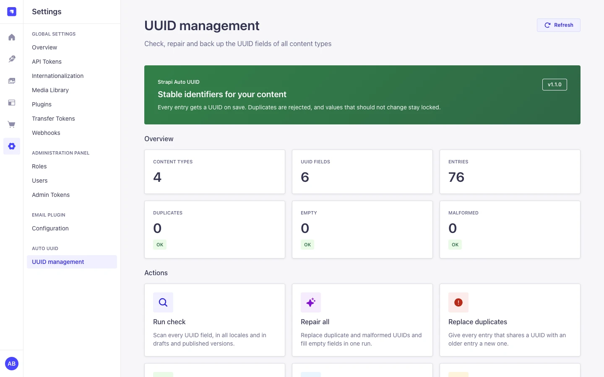
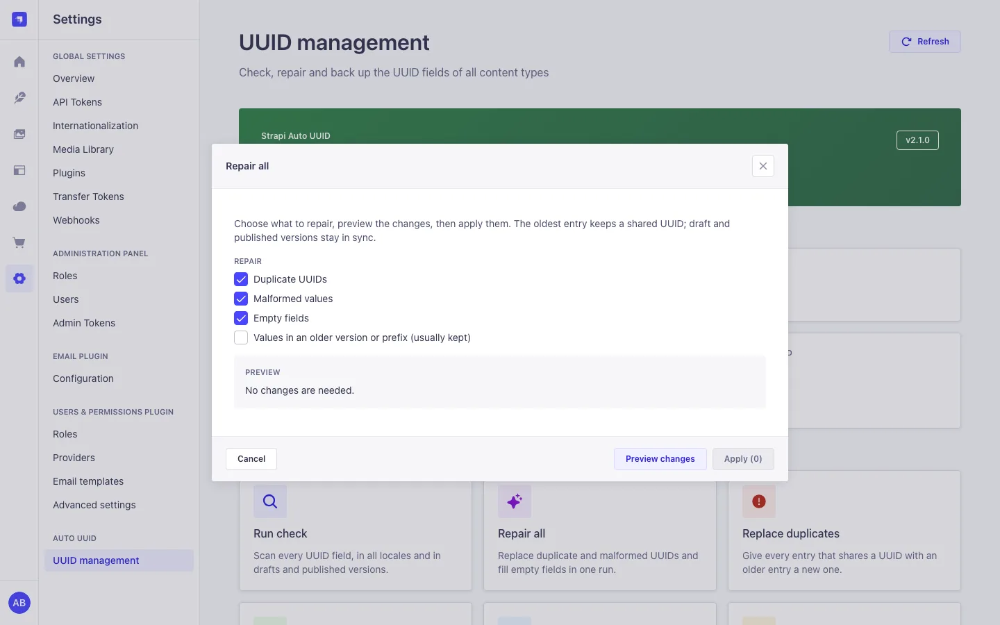
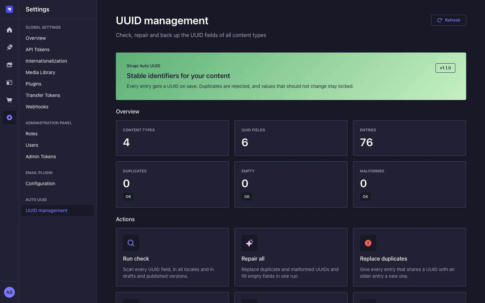
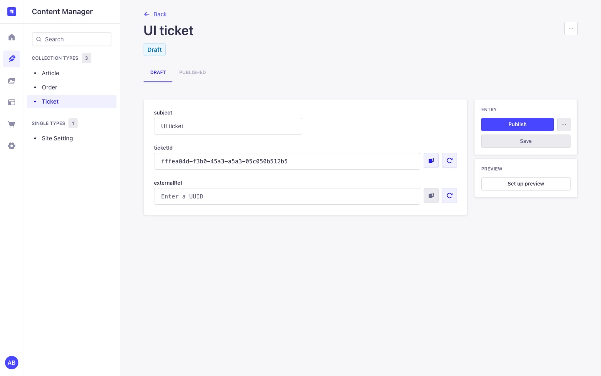
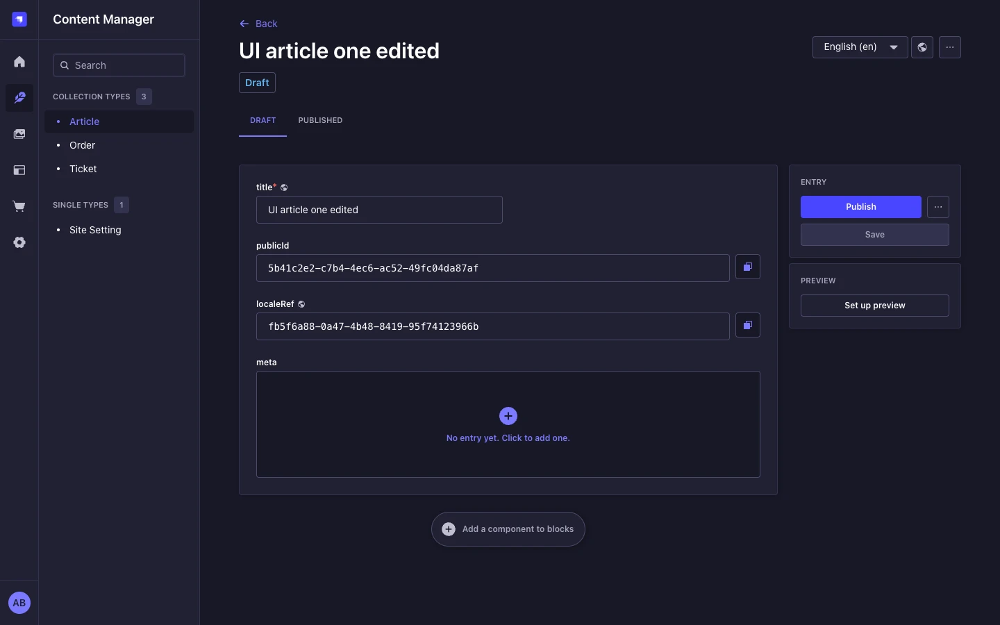
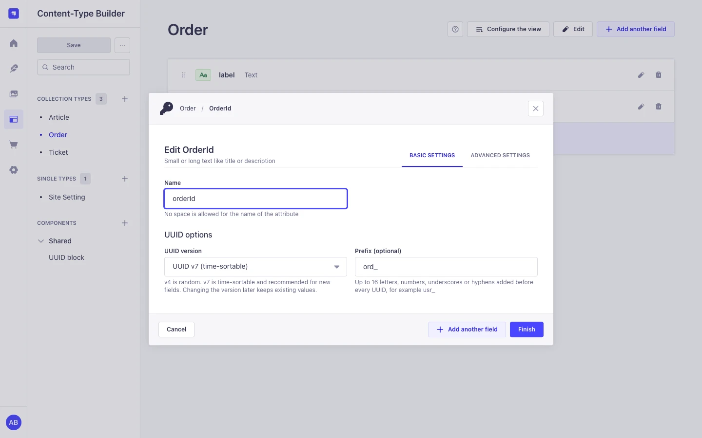
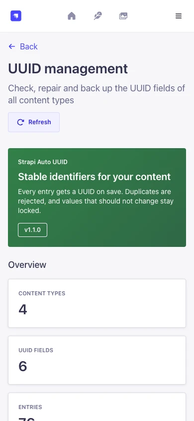
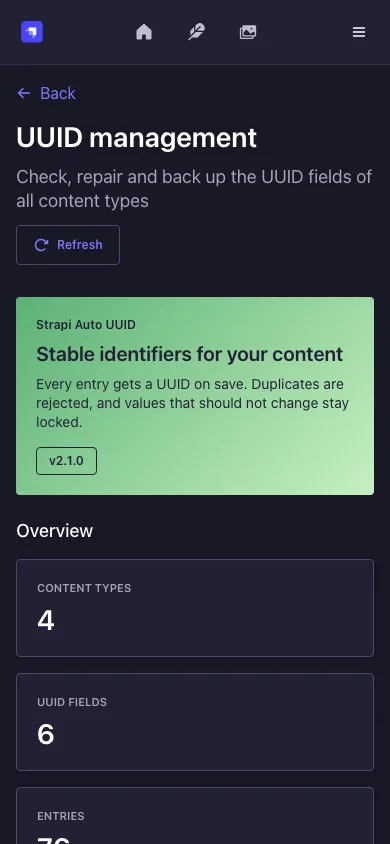

Generated on the server
Random v4 or time-sortable v7, with an optional prefix such as usr_.
REST, GraphQL, the Document Service and the admin all get a value.
Add a UUID field in the Content-Type Builder and every entry gets a UUID v4 or UUID v7 value on save, from the admin, REST, GraphQL or the Document Service. Duplicates are rejected, and values stay locked unless you allow editing.

One custom field, enforced on the server for every write path, plus an admin page to check and repair what is already stored.
Random v4 or time-sortable v7, with an optional prefix such as usr_.
REST, GraphQL, the Document Service and the admin all get a value.
Checked on every save across documents, locales, drafts and published rows, case insensitive. Values cannot change unless the field allows editing.
See duplicates, empty and malformed values per field. Repairs show a preview, ask for confirmation and run in one transaction.
Back up every UUID as JSON and restore it into empty fields. Large exports are split into files that fit one import each.
Railway replicas and pm2 cluster workers share one database. Locks and rate limits live there, so you do not need Redis or sticky sessions.
No outbound requests, no telemetry and no license check. The admin UI uses the Strapi Design System in light and dark mode, in five languages.
Requires Strapi 5.24 or newer (acceptance host: Strapi 5.61.0) and Node.js 22.12 or newer. A fresh Strapi app installs it with npm, Yarn 1 or pnpm without a single peer dependency warning from this package.
npm install strapi-auto-uuid-v5export default () => ({
'field-uuid': {
enabled: true,
},
});
JavaScript projects use config/plugins.js with
module.exports = { 'field-uuid': { enabled: true } };
Run npm run build && npm run develop. In the Content-Type
Builder choose Add another field, Custom,
UUID, pick v4 or v7, and save an entry.
Super Admins see Settings > Auto UUID > UUID management right away. Other roles need the permissions listed under Security.
A content type ticket with a v7 field ticketId and the prefix
tkt_. All values are synthetic.
"ticketId": {
"type": "customField",
"customField": "plugin::field-uuid.uuid",
"unique": true,
"options": { "uuid-version": "v7", "uuid-prefix": "tkt_" }
}// request
{ "data": { "title": "Printer offline" } }
// response
{
"data": {
"documentId": "k2v8q4n6x0c1m3b5z7l9p2r4",
"title": "Printer offline",
"ticketId": "tkt_019a5f3c-8b2e-7d41-9c3a-5e2f1b7a4d10"
},
"meta": {}
}const ticket = await strapi.documents('api::ticket.ticket').create({
data: { title: 'Printer offline' },
});
strapi.log.info(ticket.ticketId); // tkt_019a5f3c-...{
"data": null,
"error": {
"status": 400,
"name": "ValidationError",
"message": "UUID already exists for field 'ticketId'. Please use a unique value.",
"details": { "field": "ticketId", "code": "DUPLICATE_UUID" }
}
}
Other codes: INVALID_UUID, IMMUTABLE_UUID,
BULK_UUID_WRITE, INVALID_UUID_FIELD_CONFIG and
UUID_TARGET_UNKNOWN.
The plugin's lifecycle hooks apply these rules to every write, whatever the source.
| Situation | Result |
|---|---|
| Create with an empty field | A value is generated, unless auto-generation is off for the field. |
| Create with a value, field not editable | The value is replaced with a generated one. |
| Create with a value, field editable | Kept if it matches the version and prefix and no other document uses it, otherwise 400. |
| Publish, discard draft, new locale | The document keeps its value. |
| Clone | The copy gets a new value. The admin clone page clears the copied value first. |
| Same UUID in other letter case | A duplicate (400). New values are stored in lowercase. |
| Update with a different value | Only for editable fields, or once while the field is empty. |
updateMany that sets one UUID on several documents |
Rejected with 400. |
A localized UUID field has its own value per locale; a non-localized one is shared by all locales of a document. UUID fields inside components are filled by the admin only; the server does not generate, validate or repair them.
The admin screens follow the Strapi Design System, in light and dark mode and on small screens. All screenshots use synthetic data.







Plugin defaults go under the field-uuid key in
config/plugins.js or .ts. All keys are optional; unknown keys
and wrong types fail at boot.
| Option | Type | Default | Effect |
|---|---|---|---|
defaultVersion |
'v4' | 'v7' |
'v4' |
Version for fields that do not set one. |
autoGenerate |
boolean | true |
Generate on create and fill empty fields on save, unless off for the field. |
validateUniqueness |
boolean | true |
Reject a value that another document already uses. |
maxRetryAttempts |
integer 1 to 10 | 3 |
Retries when a generated value is already taken. |
autoMigrate |
boolean | false |
Repair empty, malformed and duplicate values at startup. Never replaces values in an older version or prefix. |
logLevel |
debug, info, warn, error
|
'info' |
Minimum level of the plugin's log lines. |
rateLimitStore |
auto, database, memory |
'auto' |
Where admin rate-limit counters live. auto uses the database on
PostgreSQL and MySQL and memory on SQLite.
|
| Option in the Content-Type Builder | Default | Effect |
|---|---|---|
| UUID version | v4 |
v4 is random, v7 is time-sortable. |
| Prefix | none | 1 to 16 letters, numbers, _ or -. |
| Unique values | on | Strapi's publish check. Not a database constraint; the plugin rejects duplicates on every save either way. |
| Private field | off | The field is not returned by the API. |
| Disable auto-generation | off | Editors enter the value; without manual editing it is then locked. |
| Allow manual editing | off | Editors and API clients can set and change the value. |
The plugin has no Content API routes. Its management routes need an admin JWT and a plugin permission, checked on the server.
| Action UID | Allows |
|---|---|
plugin::field-uuid.read |
The settings page, counts and the check. |
plugin::field-uuid.migrate |
Replace duplicates and malformed values, fill empty fields. |
plugin::field-uuid.export |
Export every documentId and UUID of every content type, regardless of Content Manager permissions. Grant it like a backup permission. |
plugin::field-uuid.import |
Fill empty UUID fields from an export. |
Report vulnerabilities privately through GitHub security advisories.
Admin routes under /field-uuid. Write routes default to a preview; send
"dryRun": false to write.
| Method and path | Permission | Limit / min | Purpose |
|---|---|---|---|
GET /health |
admin login | none | Plugin status. |
GET /stats |
read |
20 | Counts and UUID fields per content type. |
GET /models |
read |
none | UUID fields per content type. |
GET /diagnose |
read |
5 | Counts per field, no values. |
GET /migration/status |
read |
10 | Counts per field, no values. |
POST /autofix |
migrate |
5 | Replace duplicates. |
POST /generate-missing |
migrate |
5 | Fill empty fields. |
POST /migration/run |
migrate |
3 |
Selected fixes: fixEmpty, fixInvalid,
fixDuplicates, fixLegacy.
|
GET /migration/export |
export |
3 | Download all mappings as JSON. |
POST /migration/import |
import |
3 | Fill empty fields from an export. At most 10,000 entries; the body must fit Strapi's JSON limit (1 MB by default). |
Status codes: 400 invalid body, 401 no admin login, 403 missing permission, 409
REPAIR_IN_PROGRESS while another repair or import runs on any instance, 429
rate limit. Only the export contains documentIds and UUID values.
// request
{ "fixEmpty": true, "fixDuplicates": true, "fixInvalid": true }
// response (dryRun defaults to true, nothing is written)
{
"dryRun": true,
"fixed": { "empty": 3, "invalid": 0, "legacy": 0, "duplicates": 1 },
"skipped": 0,
"errors": [],
"totalFixed": 4
}Checks and exports read rows in pages of 5,000 and select only the columns they need. Imports look up 500 entries per query batch. On SQLite with about 5,000 synthetic entries, the overview scan took 40 ms and a 5,000-value import 315 ms.
Each save looks up the UUID column a few times. For large tables, add an index with a Strapi database migration:
'use strict';
const INDEXES = [['tickets', 'ticket_id']];
async function up(knex) {
for (const [table, column] of INDEXES) {
if (!(await knex.schema.hasTable(table)) || !(await knex.schema.hasColumn(table, column))) {
continue;
}
await knex.schema.alterTable(table, (t) => t.index([column], `${table}_${column}_uuid_idx`));
}
}
module.exports = { up };Tested with 8 Node processes on one PostgreSQL 16 database (for example 2 Railway replicas with 4 pm2 workers each). The database is the only shared state.
The save locks the value before its uniqueness check. One wins, the other gets 400
DUPLICATE_UUID.
One repair or import runs at a time across all processes. The other answers 409
REPAIR_IN_PROGRESS.
Counters live in the table field_uuid_rate_limits and are increased
with one atomic upsert, so 8 processes do not allow 8 times the limit.
PostgreSQL advisory locks or MySQL row locks, scoped to the transaction. A crashed worker never leaves one behind.
processes x pool.max must stay below
max_connections.
| Plugin | Strapi | Node.js | Database |
|---|---|---|---|
| 2.x | 5.24 or newer, acceptance host 5.61.0 | 22.12 to 26 | SQLite, PostgreSQL, MySQL 8 / MariaDB |
| 1.x | 5.x | as Strapi requires | any Strapi database |
| Strapi 4 | Cringe-Studio/strapi-auto-uuid | ||
Required peers are the ones in the Strapi app template (@strapi/strapi,
react, react-dom, react-router-dom,
styled-components). @strapi/design-system,
@strapi/icons and react-intl are optional peers because Strapi
installs them itself.
2.1 needs no changes except, with several processes, create-table rights for the database user. The 2.0 migration from 1.x is stricter:
Fields with manual editing off replace values sent on create. Turn on Allow manual editing for fields that API clients fill.
A create with a UUID another document uses, in any letter case, returns 400
DUPLICATE_UUID.
POST /check-duplicate was removed. Imports take at most 10,000 entries
and never accept overwrite: true.
Node.js 22.12 or newer and Strapi 5.24 or newer. Unknown config keys fail at boot.
From Strapi 4: rename the plugin key from strapi-auto-uuid to
field-uuid, run the check, export a backup, then repair if needed.
No. Draft, published and locale rows of one document share a value, so a plain unique index is impossible. The plugin checks every save and serializes concurrent saves with database locks.
Strapi refuses its quick clone for unique attributes. Use the clone page of the entry, or turn off Unique values for the field.
Export again: the export is split into files that each fit one import.
The admin fills an empty one when the component is shown. The server does not generate, validate or repair them.
No. Locks and rate-limit counters live in the database.
No. The plugin makes no network requests and has no license check.
Conventional Commits and semantic-release on pushes to main. Every release
runs lint, format check, tests (including lifecycle and repair tests on a real SQLite
database), build and package verification, then publishes to npm with provenance. Pull
requests also run the PostgreSQL and 8-process tests on Node.js 22 and 24.
npm ci --legacy-peer-deps
npm run lint
npm run format:check
npm test
npm run test:concurrency
npm run build
npm run verify